Adventure.
Main Project
北米大陸横断のたび
高校1年から始まった、北米大陸を自転車で走り続けた7年間のプロジェクト。
✅ COMPLETED
North America
North America
Cross-Continental Ride
北米大陸最東端（セント・ジョンズ）を出発し、
カナダ・イエローナイフまで自転車で走り続けた
~10,000km
総走破距離
5回
遠征回数
7年
プロジェクト期間
走破ルート

Photos
旅の記録


Trail Running
トレイルランニング
本格始動から2年。山を走る新たな挑戦。
🥇 優勝


スカイライントレイル菅平
30 km
長野県上田市菅平高原で行われたトレランレースへ出場。30kmの部で優勝しました！
🏃 出場
軽井沢トレイルランニングレース
43 km
長野県軽井沢町で開催されたトレランレースへ出場。
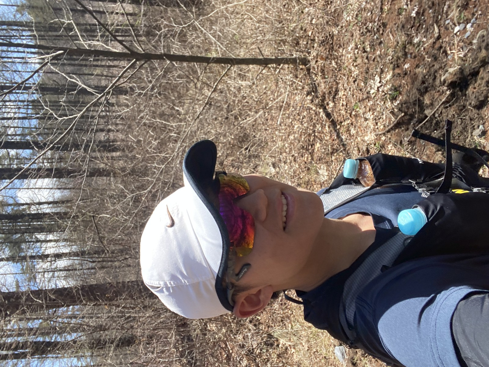
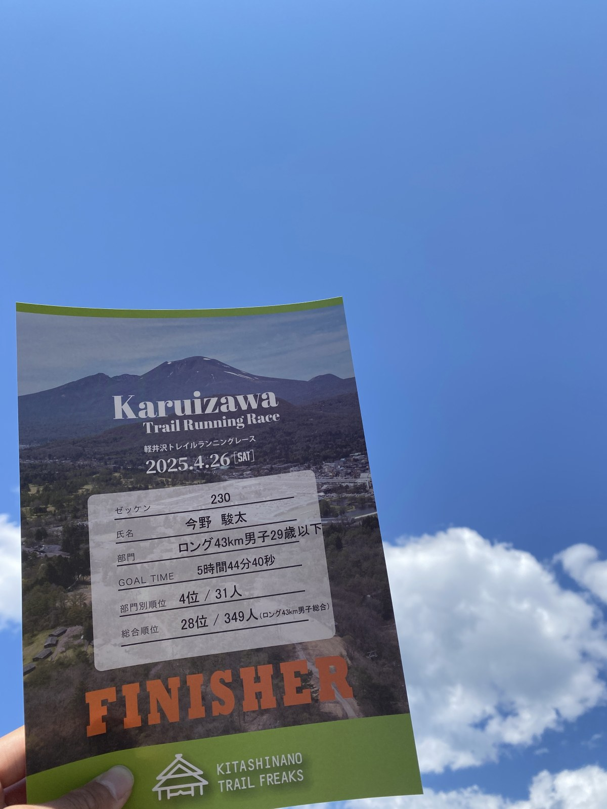
History
過去の冒険
小学生から現在まで、自転車で走り続けた記録。
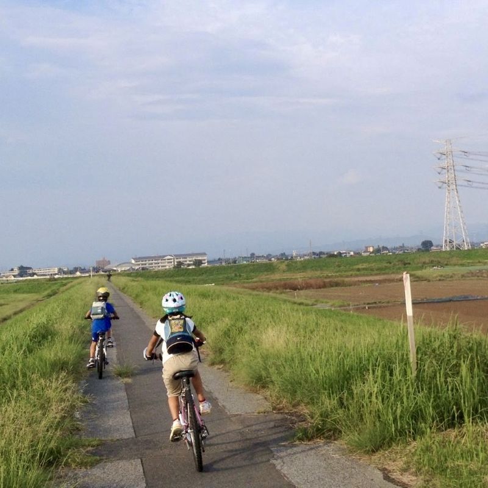
小学生 2012長野 → 千葉 MTBツーリング
250 km
初の長旅。冒険に目覚めた原点。
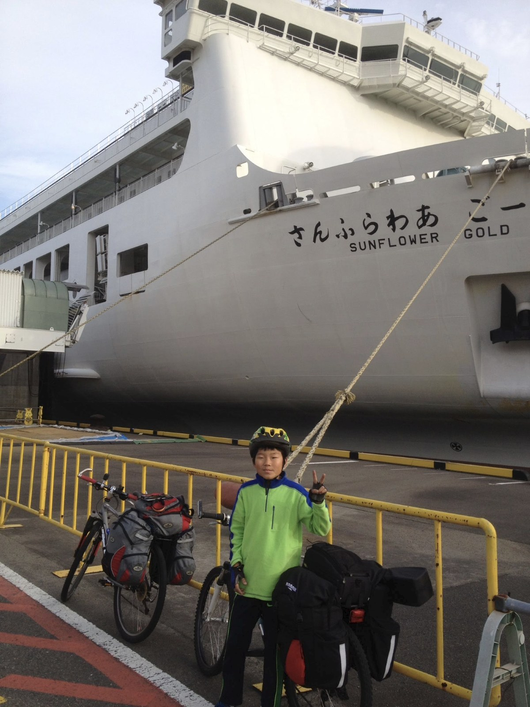
小学生 2013〜2015日本横断のたび
1,500 km
長野 → 鹿児島。3年かけて日本列島を縦断。
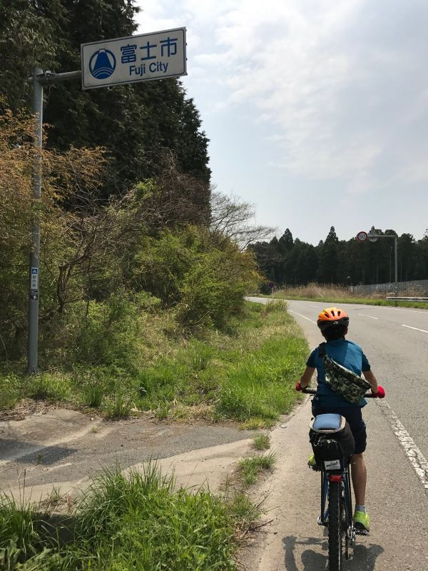
中学生 2017富士山一周
150 km
日本最高峰の麓をぐるりと周回。
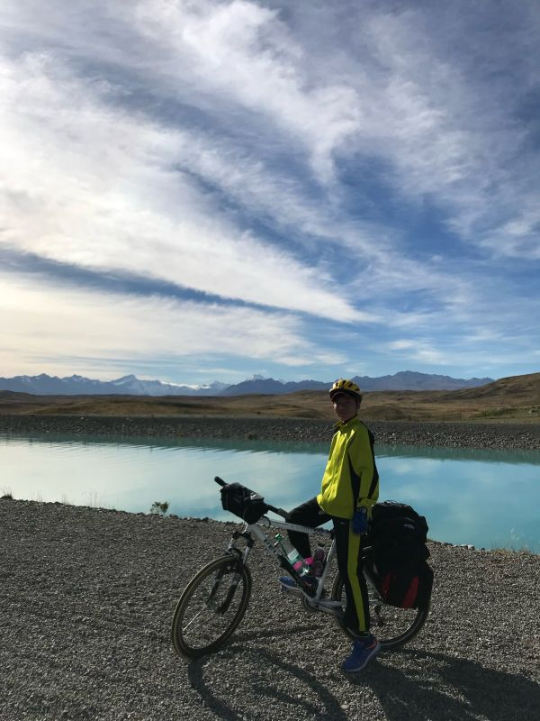
中学生 2018ニュージーランド縦断
約 800 km
初の海外自転車旅。緑の大地を走り抜ける。
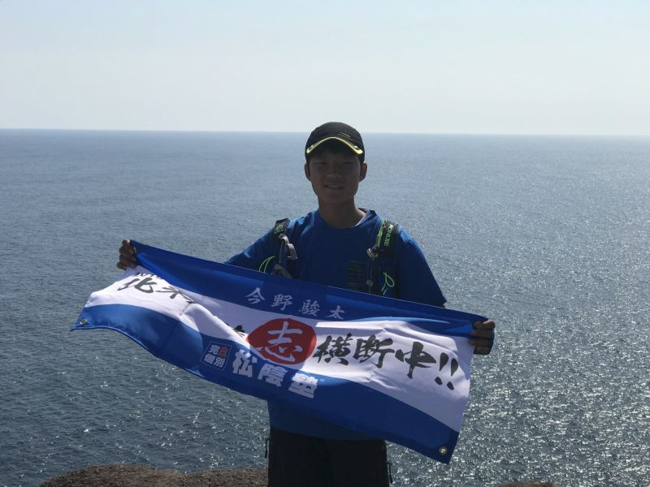
高校生 2019第1回 北米大陸横断のたび
1,500 km
セント・ジョンズ → ポートランド。プロジェクトの始動。
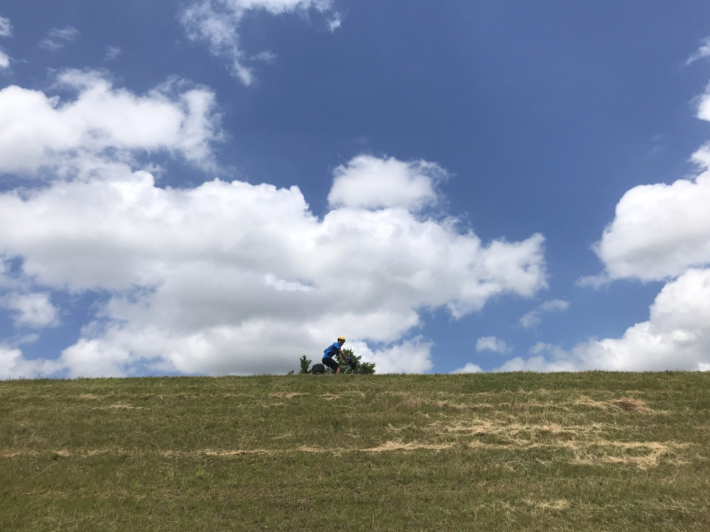
高校生 2020長野 → 新潟 自転車旅
約 250 km
山を越え、日本海を目指した旅。
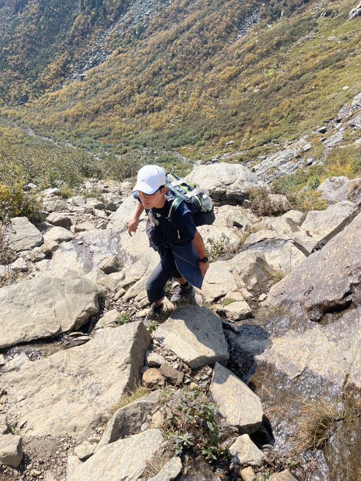
高校生 2021百名山 10座登頂
10 座
自転車だけでなく登山にも本格挑戦。
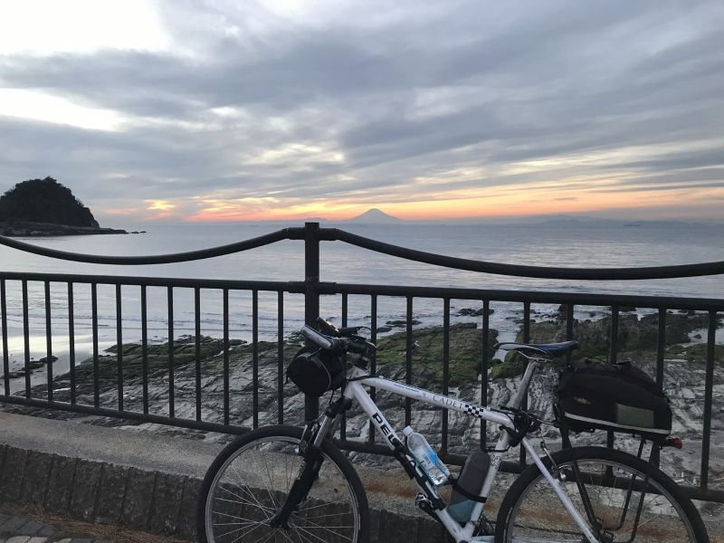
高校生 2021千葉県一周
450 km
生まれ故郷・千葉を自転車でぐるりと一周。
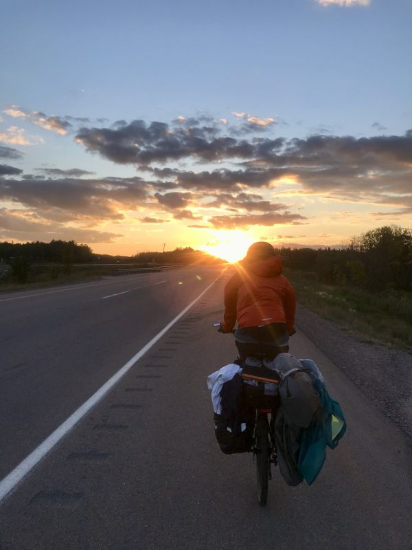
大学生 2022第2回 北米大陸横断のたび
2,500 km
モントリオール → ウィニペグ。大陸横断の核心部へ。
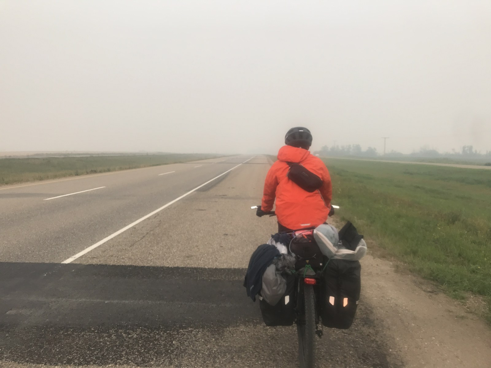
大学生 2023第3回 北米大陸横断のたび
1,500 km
ウィニペグ → エドモントン。
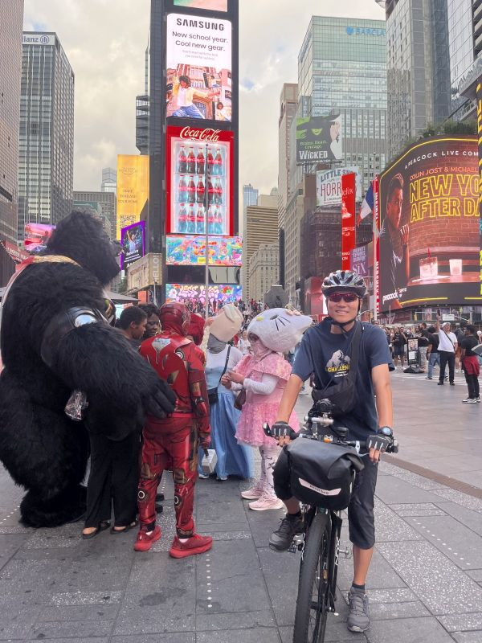
大学生 2024第4回 北米大陸横断のたび
1,500 km
ニューヨーク → ポートランド → モントリオール。
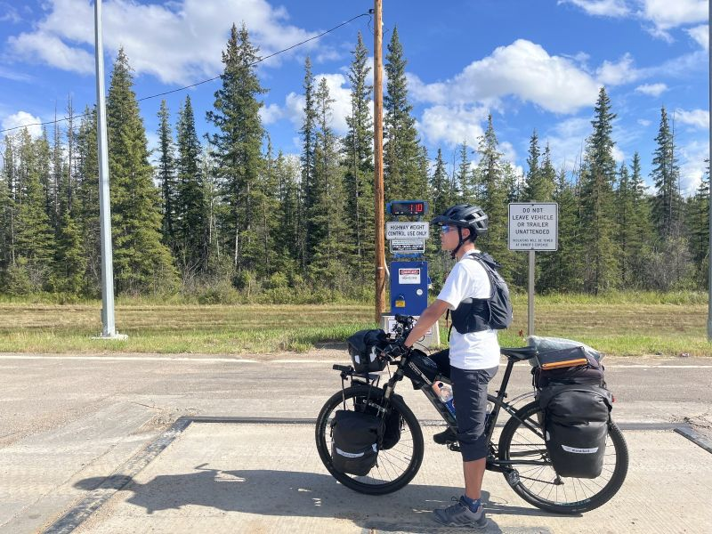
大学生 2025第5回 北米大陸横断のたび
1,500 km
エドモントン → イエローナイフ。プロジェクト完結。